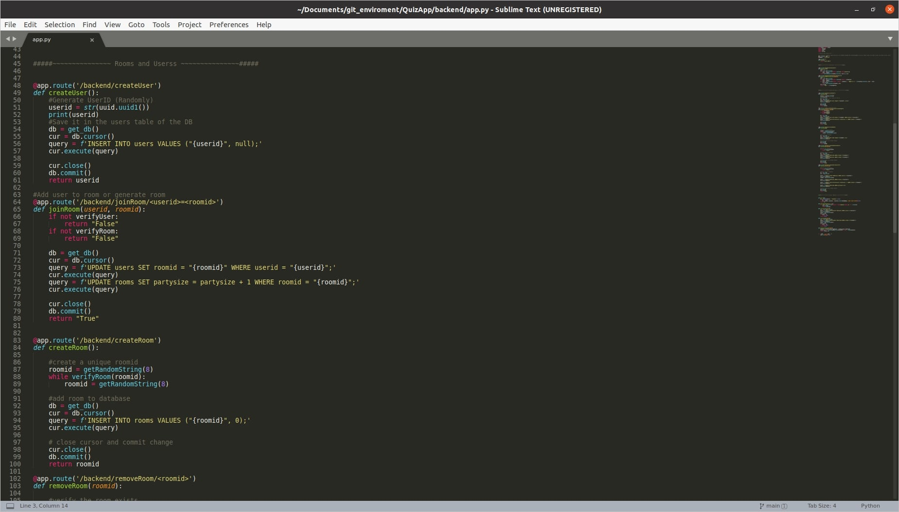

Far far away, behind the word mountains, far from the countries Vokalia and Consonantia, there live the blind texts. Separated they live in Bookmarksgrove right at the coast of the Semantics, a large language ocean.
A full stack web development project. The frontend was created with React and Bootstrap, the backend is a REST API built using the Flask framework. It uses a SQLite database, and user authentication is being implemented with OAuth.